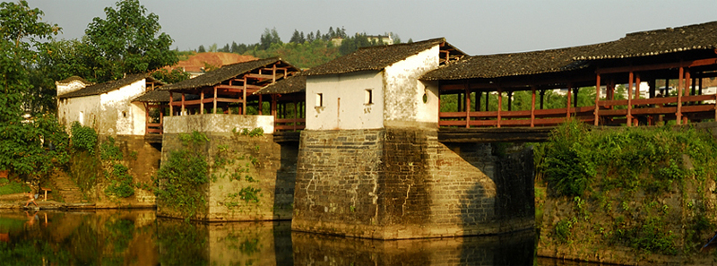
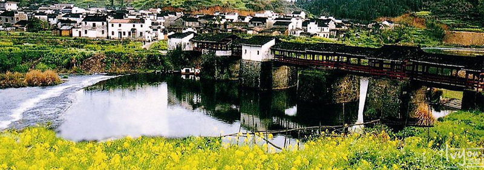

宋代建造的古桥彩虹桥是婺源廊桥的代表作，所谓廊桥就是一种带顶的桥，这种桥不仅造型优美，最关键的是，它可在雨天里供行人歇脚。 彩虹桥被各媒体誉为中国最美的廊桥，省级重点保护文物，她有着悠久的历史，建于南宋，已有800年。 彩虹桥全长140米，由六亭，五廊构成长廊式人行桥，每墩上建一个亭，墩之间的跨度部分称为廊，因此，也叫廊亭桥，从远处看，亭略高于廊，形成错落有致。 整座桥为了便于维修，化整为零，每个亭、廊都是独立的，这样做不会因为一处坏而影响到整座桥，设计非常科学。其中桥墩是整座古桥最精美的部分，体现了古朴厚重的艺术风格是，历史的存积感很强。彩虹桥周围景色优美，青山如黛，碧水澄清，坐在这里稍作休憩，浏览四周风光，会让人深深体验到婺源之美。
